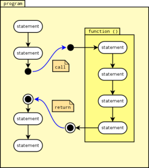
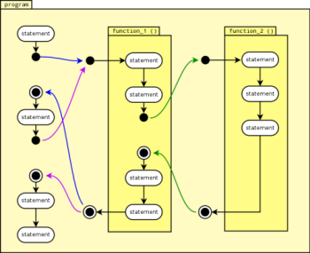
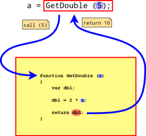
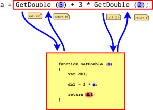
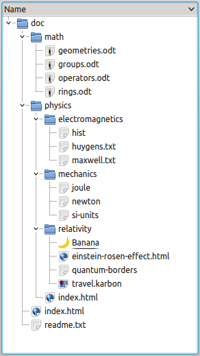
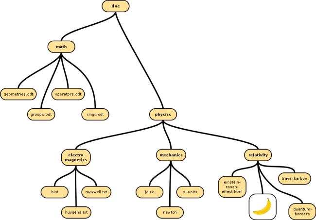
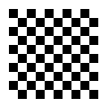

- Introduction
- Your workspace
- Using Javascript
- Javascript tour
- Statements
- Variables
- Operators
- Control flow
- Functions
- Problem solving
Other links:
Work area
|
Functions
The concept of functions is leaning on an old definition of functions in mathematics. In 1748,
Leonhard Euler defined a function such:
A function of a variable quantity is an analytic expression composed in any way whatsoever
of the variable quantity and numbers or constant quantities.
(Euler, Leonhard (1988). Introduction to Analysis of the Infinite. Book I. Springer-Verlag.)
A function was seen as an analytic expression, and maybe the concept of functions in programming
leans on the idea that a usually long mathematical expression is substituted by a short name
(plus parameters). For example, the function
f (x) = 2x3 + 5x2 - 8
equates a short symbol
f (x)
with a longer expression
2x3 + 5x2 - 8
.
|  |
In programming a function is a sub program, i.e. a 'program within a program'. The program
uses the function by calling it (function call). The function call will
pass control to the function, and once the function has finished, control will return
to the statement which called the function.
Here is an example of a program using one function:
/* - Function definition - */
function LogStart ()
{
console.log ("Starting!");
}
/* ----- Main program ----- */
var i;
var sum;
sum = 0;
/* Function call */
LogStart ();
for (i = 1; i <= 10; i++)
{
sum += i;
}
console.log (sum);
|
|
A function can be called from more than one place in a program, also from inside another function.
Control will always return to the statement from where the function was called.
Here's a silly little program with multiple function calls, partially from within another
function:
function PrintNumberTwo ()
{
console.out ("Number 2");
}
function PrintNumberOne ()
{
console.out ("1");
PrintNumberTwo ();
}
/* ---- Main program ---- */
var a = "Hello";
var b = "Hello World";
PrintNumberOne ();
console.log (a);
PrintNumberOne ();
console.log (b);
PrintNumberTwo ();
|
 |
|  |
A function can also be called as part of an expression. When the expression is being evaluated
the function will be called at the appropriate time during evaluation of the term. Values returned
from the function will be used as if they had been directly put into the term. In the illustrated
example, a is assigned the value 10.
|
|
A term can contain several function calls. The resp. functions will be called at the appropriate time,
and return values will be used for the calculation. In this illustrated example, a will
be assigned the value 10 + 3 * 4 = 22.
|
 |
Advantages
There are multiple advantages of using functions:
-
Code savings. As in algebra, once a function is defined it can be used over and over,
just by invoking its name. Since the function name is much shorter than the function itself,
using functions saves a great amount of coding.
-
More robust programs. Once a function works as expected it will work correctly
whenever it's called. A bug in a function has more impact on the program, but it just needs
to be fixed in one place to remove the bug from the entire program.
-
Clearer code. Code using well written functions is much easier to understand and maintain.
If functions are written well, they can be offered as libraries for other developers to use in their
projects. For example, this website uses a library "prettify" which is used to format the source code
examples.
Using functions
Just like with variables, a function needs to be declared and defined before
it can be used. Thankfully, Javascript brings both things together, so declaring and defining are done
in one step. But there are other languages (for example, C++) where declaration and definition can be
separated (even using separate files).
Function declaration / definition
Before we can use a function we need to declare and define it. Javascript does both in one step.
A function declaration/definition...
-
... starts with the keyword function,
-
... followed by the function name,
-
... then by a comma separated list of parameters, enclosed in brackets,
-
... then followed by the function body which is a block of statements in braces {}.
Here's an example of a function declaration/definition:
function LogMessage (time, message)
{
var out;
out = time + " - " + message;
console.log (out);
}
Function name
function LogMessage (time, message)
In most programming languages, functions must have a name. This can be a mix of letters (a-z, A-Z),
digits (0-9) and the underscore ('_'). The first character in the function name must not be a digit.
Avoid any other characters such as whitespace. Examples of valid function names would be:
GetWindow, setID, computeCorner_1. Examples of invalid function names
would be: 21SectionLog (starts with a digit), Get My Coordinates
(contains spaces), log-message (contains illegal character [hyphen '-']).
In the above example, the function name is LogMessage.
Javascript allows for anonymous functions, i.e. functions without a name. This feature is often
used by Javascript developers and does have good benefits for Javascript programs. We won't handle
anonymous functions because they're not part of many other languages.
Parameter list
function LogMessage (time, message)
Often a function needs data for its work. This needs to be indicated in the function declaration
by providing a parameter list inside the brackets after the function name. A parameter
is very similar to a variable, so a parameter list consists of one or more variable identifiers
(comma separated if there's more than one variable). When the function is executed, the parameters
can be used just like regular variables.
In the above example, the parameter list is (time, message). It contains two parameters,
time and message, separated by one comma ','. Both parameters are used
inside the function body, in line 5.
Another name for 'parameter' is argument.
Function body
function LogMessage (time, message)
{
var out;
out = time + " - " + message;
console.log (out);
}
The function body defines the 'business part' of the function. This is where 'stuff happens'. The
function body is executed whenever the function is called. Any arguments to the function can be used
like regular variables, and computed values can be returned to the calling party using the
return statement.
Function call
Once the function has been declared/defined it can be used by calling it. A function call
consists of the function name followed by a list of values to be passed as parameters (as specified
in the function declaration). For example, to call the function LogMessage from the above
example, one could simply write
LogMessage ("10:45", "Oopsidaisy, my frobutron just grommicked!");
anywhere in the program. When the Javascript engine executes the function call statement,
-
control will pass to the function LogMessage,
-
the values "10:45" and "Oopsidaisy, my frobutron just grommicked!" would be passed as parameters
time and message (as defined in the parameter list in the function declaration),
-
the function would create the message "10:45 - Oopsidaisy, my frobutron just grommicked!"
and print it to the Javascript console for the whole universe to behold (provided the universe
activates the developer tools and clicks on the console tab).
This course already makes extensive use of functions! Any time you click one of those "Try it" buttons, a
function in a linked Javascript file is being called.
Returning values (the return statement)
When a function has finished it can return a value back to the caller. This makes functions a very
powerful tool to aid with computations, particularly when the same computations are needed in may places
in a program. Javascript (as well as other languages) provides the statement return which is an
instruction to end a function and to return a value back to the caller. Here's a function which computes
the double value of a given parameter and returns it to the caller.
/**
* Returns the double value of the given parameter.
*
* @param x The value to be doubled.
* @return The double value.
*/
function GetDoubleOf (x)
{
var dbl;
dbl = 2 * x;
return dbl;
}
/* -------------------------------------------------------------- */
var dblVal;
dblVal = GetDoubleOf (2);
console.log (dblVal);
Note the return statement in line 13. In general, the return statement has
two purposes:
-
It ends the enclosing function which makes it a flow control statement. In our
example function, this is not very relevant, because that function ends anyway after
the return statement. However, a return statement can be placed anywhere inside
a function which will end that function immediately, even if the function has more
statement after the return instruction. We'll talk more about this below.
-
It specifies the value to be returned. Whilst this gives the return
statement a dual purpose, it's a very convenient and logical place to pass a value back
to the caller! The little bit of increased complexity doesn't really hurt (At least, most
programmers can cope very well with it). In our example, the returned value is dbl,
which will be 4. Therefore, when the function has finished, the value 4
is being returned and assigned to the variable dblVal (line 19).
A function can never return more than one value. For example, the square root of 25 has got
two solutions, +5 and -5. However, Math.sqrt (25) returns +5 only.
Using functions in expressions
Since functions can return values, they can be used as part of expressions. In fact, in our example
above we already used the function GetDoubleOf inside the expression
dblVal = GetDoubleOf (2) (in line 19). When executing this assignment the Javascript engine
calls the function at the appropriate time. The term could have been more complex.
For example, we could have called GetDoubleOf as part of a longer calculation
dblVal = 5 * GetDoubleOf (12); /* 5 * 24 => 120 */
We could even have used GetDoubleOf twice in the term
dblVal = 5 * GetDoubleOf (12) + GetDoubleOf (3) /* 5 * 24 + 6 => 126 */
which would have called this function twice - using the returned values as part of the calculation.
When using function calls in expressions, all rules of computing arithmetics apply. For example,
multiplication will still come before addition. See the chapter on
Operators and Expressions.
Javascript inbuilt functions
Javascript offers many inbuilt functions, ready for your use. For example, there's a wealth
of Javascript functions to do mathematical operations. We won't handle the inbuilt functions
here, look them up in the
MDN.
Nefarious techniques with functions: Recursion
We learned that a function can be called from within another function. A function can even call
itself. This technique is called recursion. Recursion can be used to solve a complex
problem by subdividing it into simplified versions of itself. This sounds great, but what's it
useful for?
Trees, trees and more trees...
One often used data structure is a tree. A tree consists of a number of nodes,
each holding a piece of data. One example of such a tree is a file structure with sub directories
and files - such as this one:

In this directory structure, each node is either a (sub) directory or a file. Here's a more
tree like representation of our file structure:

The whole arrangement looks like an upside-down tree (that's why it's called a tree). The nodes
are linked to each other in such a way that each node has got a parent and zero or more child
nodes. Nodes with no children are called leaves. There's one node which doesn't have a
parent, that one is called the root of the tree. If you look closely you can see that
all leaf nodes are files, all other nodes are (sub) directories, and the root node is the
directory /doc.
Walking with the monkey
Suppose, our directory tree has got a hungry monkey living in it, and the monkey wants to visit all of
the nodes in our tree to find the banana and destroy it! Thanks to recursion, the banana is already as good as dead!
function Visit (node)
{
var i;
var n;
var nd;
var isBanana;
isBanana = IsBanana (node);
if (isBanana)
{
console.log ("Yum Yum!");
}
n = GetNumChildren (node);
if (n >= 1)
{
for (i = 0; i < n; i++)
{
nd = GetChildNode (node, i);
Visit (nd); /* Recursion: Visit child node */
}
}
}
Apart from giving the monkey it's well deserved feeling of happiness the function doesn't do
very much yet. However, it would be possible to add code in the function which does nifty things
with every node such as changing the node's data or searching for some content.
Exercises
-
Rewrite the following programs using functions.
-
var i;
var x;
var exp;
var pow;
x = 10;
exp = 2;
pow = 1;
for (i = 1; i <= exp; i++)
{
pow = pow * x;
}
console.log (x + " to the power of " + exp + " = " + pow);
x = 10;
exp = 3;
pow = 1;
for (i = 1; i <= exp; i++)
{
pow = pow * x;
}
console.log (x + " to the power of " + exp + " = " + pow);
x = 10;
exp = 5;
pow = 1;
for (i = 1; i <= exp; i++)
{
pow = pow * x;
}
console.log (x + " to the power of " + exp + " = " + pow);
-
var x;
var y;
x = 6;
y = x << 1;
console.log (x + "->" + y);
x = 5;
y = 4 * x / 2;
console.log (x + "->" + y);
x = 25;
y = x + x + x + x - x - x;
console.log (x + "->" + y);
-
The program below draws a stripey pattern onto a HTML canvas element. However, there
must be something wrong with the code, because we expected the program to draw a chessboard
pattern like this one:

In short - this program needs correction! As you're already at it -you can make much better
use of functions and use control flow statements! Here's the buggy souce code:
<html>
<head>
<script type="application/javascript">
function DrawChessBoard ()
{
var cnv = document.getElementById ("canvas");
var ctx = cnv.getContext ('2d');
ctx.fillStyle = "black";
ctx.fillRect ( 0, 0, 10, 10);
ctx.fillStyle = "white";
ctx.fillRect (10, 0, 10, 10);
ctx.fillStyle = "black";
ctx.fillRect (20, 0, 10, 10);
ctx.fillStyle = "white";
ctx.fillRect (30, 0, 10, 10);
ctx.fillStyle = "black";
ctx.fillRect (40, 0, 10, 10);
ctx.fillStyle = "white";
ctx.fillRect (50, 0, 10, 10);
ctx.fillStyle = "black";
ctx.fillRect (60, 0, 10, 10);
ctx.fillStyle = "white";
ctx.fillRect (70, 0, 10, 10);
ctx.fillStyle = "black";
ctx.fillRect (80, 0, 10, 10);
ctx.fillStyle = "white";
ctx.fillRect (90, 0, 10, 10);
ctx.fillStyle = "black";
ctx.fillRect ( 0, 10, 10, 10);
ctx.fillStyle = "white";
ctx.fillRect (10, 10, 10, 10);
ctx.fillStyle = "black";
ctx.fillRect (20, 10, 10, 10);
ctx.fillStyle = "white";
ctx.fillRect (30, 10, 10, 10);
ctx.fillStyle = "black";
ctx.fillRect (40, 10, 10, 10);
ctx.fillStyle = "white";
ctx.fillRect (50, 10, 10, 10);
ctx.fillStyle = "black";
ctx.fillRect (60, 10, 10, 10);
ctx.fillStyle = "white";
ctx.fillRect (70, 10, 10, 10);
ctx.fillStyle = "black";
ctx.fillRect (80, 10, 10, 10);
ctx.fillStyle = "white";
ctx.fillRect (90, 10, 10, 10);
ctx.fillStyle = "black";
ctx.fillRect ( 0, 20, 10, 10);
ctx.fillStyle = "white";
ctx.fillRect (10, 20, 10, 10);
ctx.fillStyle = "black";
ctx.fillRect (20, 20, 10, 10);
ctx.fillStyle = "white";
ctx.fillRect (30, 20, 10, 10);
ctx.fillStyle = "black";
ctx.fillRect (40, 20, 10, 10);
ctx.fillStyle = "white";
ctx.fillRect (50, 20, 10, 10);
ctx.fillStyle = "black";
ctx.fillRect (60, 20, 10, 10);
ctx.fillStyle = "white";
ctx.fillRect (70, 20, 10, 10);
ctx.fillStyle = "black";
ctx.fillRect (80, 20, 10, 10);
ctx.fillStyle = "white";
ctx.fillRect (90, 20, 10, 10);
ctx.fillStyle = "black";
ctx.fillRect ( 0, 30, 10, 10);
ctx.fillStyle = "white";
ctx.fillRect (10, 30, 10, 10);
ctx.fillStyle = "black";
ctx.fillRect (20, 30, 10, 10);
ctx.fillStyle = "white";
ctx.fillRect (30, 30, 10, 10);
ctx.fillStyle = "black";
ctx.fillRect (40, 30, 10, 10);
ctx.fillStyle = "white";
ctx.fillRect (50, 30, 10, 10);
ctx.fillStyle = "black";
ctx.fillRect (60, 30, 10, 10);
ctx.fillStyle = "white";
ctx.fillRect (70, 30, 10, 10);
ctx.fillStyle = "black";
ctx.fillRect (80, 30, 10, 10);
ctx.fillStyle = "white";
ctx.fillRect (90, 30, 10, 10);
ctx.fillStyle = "black";
ctx.fillRect ( 0, 40, 10, 10);
ctx.fillStyle = "white";
ctx.fillRect (10, 40, 10, 10);
ctx.fillStyle = "black";
ctx.fillRect (20, 40, 10, 10);
ctx.fillStyle = "white";
ctx.fillRect (30, 40, 10, 10);
ctx.fillStyle = "black";
ctx.fillRect (40, 40, 10, 10);
ctx.fillStyle = "white";
ctx.fillRect (50, 40, 10, 10);
ctx.fillStyle = "black";
ctx.fillRect (60, 40, 10, 10);
ctx.fillStyle = "white";
ctx.fillRect (70, 40, 10, 10);
ctx.fillStyle = "black";
ctx.fillRect (80, 40, 10, 10);
ctx.fillStyle = "white";
ctx.fillRect (90, 40, 10, 10);
ctx.fillStyle = "black";
ctx.fillRect ( 0, 50, 10, 10);
ctx.fillStyle = "white";
ctx.fillRect (10, 50, 10, 10);
ctx.fillStyle = "black";
ctx.fillRect (20, 50, 10, 10);
ctx.fillStyle = "white";
ctx.fillRect (30, 50, 10, 10);
ctx.fillStyle = "black";
ctx.fillRect (40, 50, 10, 10);
ctx.fillStyle = "white";
ctx.fillRect (50, 50, 10, 10);
ctx.fillStyle = "black";
ctx.fillRect (60, 50, 10, 10);
ctx.fillStyle = "white";
ctx.fillRect (70, 50, 10, 10);
ctx.fillStyle = "black";
ctx.fillRect (80, 50, 10, 10);
ctx.fillStyle = "white";
ctx.fillRect (90, 50, 10, 10);
ctx.fillStyle = "black";
ctx.fillRect ( 0, 60, 10, 10);
ctx.fillStyle = "white";
ctx.fillRect (10, 60, 10, 10);
ctx.fillStyle = "black";
ctx.fillRect (20, 60, 10, 10);
ctx.fillStyle = "white";
ctx.fillRect (30, 60, 10, 10);
ctx.fillStyle = "black";
ctx.fillRect (40, 60, 10, 10);
ctx.fillStyle = "white";
ctx.fillRect (50, 60, 10, 10);
ctx.fillStyle = "black";
ctx.fillRect (60, 60, 10, 10);
ctx.fillStyle = "white";
ctx.fillRect (70, 60, 10, 10);
ctx.fillStyle = "black";
ctx.fillRect (80, 60, 10, 10);
ctx.fillStyle = "white";
ctx.fillRect (90, 60, 10, 10);
ctx.fillStyle = "black";
ctx.fillRect ( 0, 70, 10, 10);
ctx.fillStyle = "white";
ctx.fillRect (10, 70, 10, 10);
ctx.fillStyle = "black";
ctx.fillRect (20, 70, 10, 10);
ctx.fillStyle = "white";
ctx.fillRect (30, 70, 10, 10);
ctx.fillStyle = "black";
ctx.fillRect (40, 70, 10, 10);
ctx.fillStyle = "white";
ctx.fillRect (50, 70, 10, 10);
ctx.fillStyle = "black";
ctx.fillRect (60, 70, 10, 10);
ctx.fillStyle = "white";
ctx.fillRect (70, 70, 10, 10);
ctx.fillStyle = "black";
ctx.fillRect (80, 70, 10, 10);
ctx.fillStyle = "white";
ctx.fillRect (90, 70, 10, 10);
ctx.fillStyle = "black";
ctx.fillRect ( 0, 80, 10, 10);
ctx.fillStyle = "white";
ctx.fillRect (10, 80, 10, 10);
ctx.fillStyle = "black";
ctx.fillRect (20, 80, 10, 10);
ctx.fillStyle = "white";
ctx.fillRect (30, 80, 10, 10);
ctx.fillStyle = "black";
ctx.fillRect (40, 80, 10, 10);
ctx.fillStyle = "white";
ctx.fillRect (50, 80, 10, 10);
ctx.fillStyle = "black";
ctx.fillRect (60, 80, 10, 10);
ctx.fillStyle = "white";
ctx.fillRect (70, 80, 10, 10);
ctx.fillStyle = "black";
ctx.fillRect (80, 80, 10, 10);
ctx.fillStyle = "white";
ctx.fillRect (90, 80, 10, 10);
ctx.fillStyle = "black";
ctx.fillRect ( 0, 90, 10, 10);
ctx.fillStyle = "white";
ctx.fillRect (10, 90, 10, 10);
ctx.fillStyle = "black";
ctx.fillRect (20, 90, 10, 10);
ctx.fillStyle = "white";
ctx.fillRect (30, 90, 10, 10);
ctx.fillStyle = "black";
ctx.fillRect (40, 90, 10, 10);
ctx.fillStyle = "white";
ctx.fillRect (50, 90, 10, 10);
ctx.fillStyle = "black";
ctx.fillRect (60, 90, 10, 10);
ctx.fillStyle = "white";
ctx.fillRect (70, 90, 10, 10);
ctx.fillStyle = "black";
ctx.fillRect (80, 90, 10, 10);
ctx.fillStyle = "white";
ctx.fillRect (90, 90, 10, 10);
}
</script>
</head>
<body onload="DrawChessBoard();">
<canvas id="canvas" width="100" height="100"></canvas>
</body>
</html>
-
Here's the skeleton of a web page which performs different calculations on two operands:
<html>
<head>
<script type="text/javascript">
function Exec ()
{
var op_a = document.getElementById ("operand_a");
var op_b = document.getElementById ("operand_b");
var operation = document.getElementById ("operation");
var result = document.getElementById ("result");
var out;
out = op_a.value + operation.value + op_b.value + "=???";
result.value = "Result here";
window.alert (out);
}
</script>
</head>
<body>
<table bgcolor="#c0c0c0">
<tr>
<td>
<input type=text id="operand_a"/>
</td>
<td>
<select id="operation" size="5">
<option>+</option>
<option>-</option>
<option>*</option>
<option>/</option>
<option>pow</option>
</select>
</td>
<td>
<input type=text id="operand_b"/>
</td>
<td>
<button onclick="Exec();">=</button>
</td>
<td>
<input type=text id="result"/>
</td>
</tr>
</table>
</body>
</html>
The page offers the following operations:
- + - Add operand B to operand A
- - - Subtract operand B from operand A
- * - Multiply operand A with operand B
- / - Divide operand A by operand B
- pow - Calculate operand A to the power of operand B
To use the page
-
The user enters the operands,
-
chooses one of the operations in the list box
-
and clicks the '=' button
-
This will peform the chosen operation and print the result into the result box.
The web page code above is just the bare bones. Your task is two fold:
-
Write the missing Javascript code that makes the calculator page work as advertised!
Put the code into the <script> section of the page's HTML code! Make libeal use of
functions!
-
With your code, implement robustness! For example, you can have the page print "#ERROR"
into the result field when the user provides nonsensical values! Identify all cases where
something could be wrong and provide the code to handle these cases!
This is a difficult task and needs careful consideration first. Don't rush, but carefully think it
through! Put effort into writing good code!
-
The factorial of any integer number n is defined as the product of itself
and all smaller positive integers:
n! = n * n-1 * n-2 * ... * 1
Write a recursive function which computes the factorial of a positive integer!
-
Write a program with a recursive function which generates the following series:
"0 0 0"
"0 0 1"
"0 1 0"
"0 1 1"
"1 0 0"
"1 0 1"
"1 1 0"
"1 1 1"
|